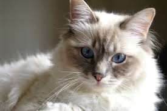
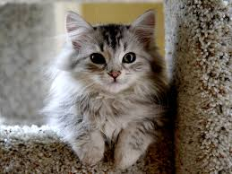

Welcome To Our Site!
It's nice to meet you
Shop
All for cats! Products from leading manufacturers.
Accessories for Clever Cats
Cats are wonderful creatures who have a great deal to offer their human companions. It is believed that cats were first domesticated by humans around 5,000 years ago and were used to help protect farmers crops from mice & other rodents. They are still a popular domesticated pet today, generally not for their hunting abilities but for a variety of other reasons which we will look at below.
Leashes for cats
Leash for small cats and kittens, made out of nylon.
Houses for cats
Comfortable and cozy house for your pet.
Bowls for cats
Bowls for cats with a thick ceramic - 5 mm. Volume bowls - 300 ml.
Doors for cats
Door for cats and kittens, outside.Made out of plastic.
Toys for cats
Many different toys for your pet.
Vitamins
Vitamins for cats and kittens.
Hygiene
Many different hygienical stuff for cats.
Portfolio
Our regular clients
-
Sam, Kiev
-

Denis, Kharkiv
-

Rosa, Kiev
-
Sisi, Kiev
-

Lora, Kiev
-
Max, Lviv
-

Dana, Lviv
-

Boris, Odesa
-
Tom, Uman'
Blog
Helpful articles
-

Your Cat's First Month at Home
After a few days in your home, your cat will likely start settling into new surroundings. It's time to start thinking about long-term care and making sure you're prepared for a long, happy life together. Here are some basics to get you started in the first month...
-

House-soiling: Trouble Beyond the Litter Box
Unfortunately, cats don't always connect with the litter box. Even cats that know the drill will sometimes choose another spot at home. "House-soiling" can become a concern for even the best cat owners. It can be a sign of a serious health issue or simply the result of changes around the house. Pay close attention for clues to put an early end to a nasty problem for both you and the cat you love...
-

Keeping Your Cat Happy at Home Alone
You may not think of cats as paying much attention when their owners come and go, but some cats can develop separation anxiety when they form a particularly strong bond with their owners. Keep an eye on your cats for signs of anxiety and take steps to ensure peace of mind in your absence...